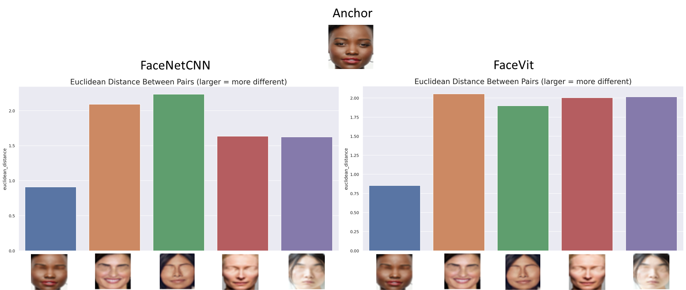

Diverse-Face Variations
Using one face as anchor, we compare diverse faces against similar variations
In this second part of the experiment, instead of comparing one anchor image with modified versions of the same image, we compare the same manipulation in images of different faces, focusing on the specific modifications that yielded interesting results in experiment 1: faces with no nose, faces with no eyes, and faces with no hair.

Observations
In this experiment, both networks perform similarly in recognizing faces without eyes.
Face Transformer has a harder time recognizing a face without a nose or without hair, compared to FaceNet.
Conclusion
The two networks perform very similarly with the same type of images. There is no substantial difference in how they process images holistically, even if there are variations in how accurately they recognize faces.